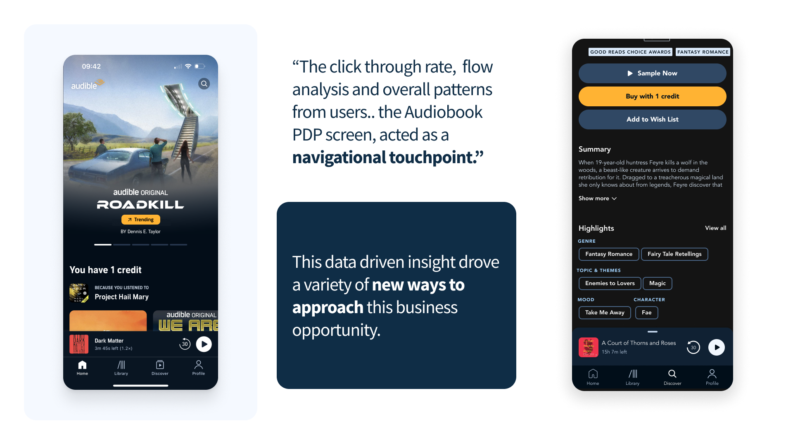
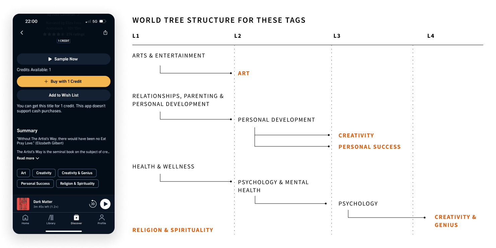

Case Study
Audible
Redesigning the internal content metadata pipeline at Amazon's Audible, transforming how 500K+ audiobook titles are ingested, enriched, and surfaced to millions of listeners worldwide.
The Problem
Audible's content catalog was growing faster than the internal tools could handle. The metadata pipeline, the system that ingests, validates, enriches, and publishes audiobook metadata, had been built incrementally over years and was struggling under the weight of 500K+ titles across dozens of markets.
Content operations teams were spending 40% of their time on manual data cleanup rather than strategic curation. Error rates in metadata (wrong narrators, missing categories, incorrect series ordering) were directly impacting discovery and customer trust. A title with bad metadata is effectively invisible to listeners.
I was brought in to redesign the pipeline's operator experience, making it faster, more accurate, and scalable enough to support Audible's aggressive content expansion.
Research & Discovery
I spent the first 6 weeks embedded with the content operations team, shadowing their workflows, auditing the existing tooling, and mapping the end-to-end data flow from publisher submission to customer-facing product page.
Stakeholder Mapping
The pipeline touched 5 distinct teams: publisher relations, content ingestion, editorial curation, quality assurance, and localization. Each team had developed workarounds and shadow processes that weren't visible in the official workflow documentation.
Key Findings
- Operators toggled between 7 different tools to process a single title; no unified view existed
- Validation rules were inconsistent across markets, causing titles to pass QA in one region and fail in another
- Batch operations were essentially impossible: every title required individual attention
- The error resolution workflow had no state tracking; operators couldn't tell if an issue was already being addressed
- Institutional knowledge lived in people's heads, not in the system; when experienced operators left, quality dropped

PDP tags audit

Audible's existing tag taxonomy contained over 400 loosely defined labels with no consistent hierarchy or inheritance model. A full audit mapped each tag to a structured L1–L4 world tree, surfacing gaps and redundancies across genre, theme, and mood dimensions.
Design Process
Working within Amazon's design framework, I led a phased redesign that prioritized the highest-impact workflows first while maintaining backward compatibility with existing integrations.
Unified Title View
The first intervention was consolidating the 7-tool workflow into a single "title detail" view. I designed a tabbed interface that brought metadata, audio assets, editorial notes, validation status, and publication history into one screen, reducing context-switching by 80%.
Smart Validation Engine
I worked with engineering to surface validation results inline rather than in separate reports. Each metadata field now shows its validation state in real-time, with contextual guidance for resolution. Rules are market-aware; operators see only the requirements relevant to their target region.
Batch Processing
For bulk operations (re-categorization, narrator corrections, series reordering), I designed a spreadsheet-inspired batch editor with preview, undo, and dry-run capabilities. This was the single most requested feature from the operations team.
The Solution
The redesigned pipeline centered on three principles: consolidate information, automate the repeatable, and surface errors before they reach customers.
Pipeline Dashboard
A real-time operations dashboard gives team leads visibility into pipeline health: ingestion volume, error rates by category, processing bottlenecks, and SLA compliance. What was previously a weekly manual report is now a live, filterable view.
Error Resolution Workflow
I designed a stateful error queue with assignment, priority scoring, and resolution tracking. Operators can claim errors, see related issues on the same title, and mark resolutions that automatically update downstream systems. No more fixing the same problem twice.
Knowledge Codification
To address the institutional knowledge problem, I embedded contextual guidance directly into the interface: inline help, decision trees for ambiguous categorization, and "last edited by" attribution that lets operators learn from each other's decisions.
Validation
Phased Rollout
Given the critical nature of the pipeline (it feeds Audible's customer-facing catalog), we rolled out changes incrementally. Each phase ran in parallel with the existing system for 2 weeks, with operators able to toggle between old and new. This de-risked the transition and gave us real usage data before fully cutting over.
Operator Feedback Sessions
I ran bi-weekly feedback sessions with operators throughout the rollout. The most significant iteration was reworking the batch editor's confirmation flow; operators needed more explicit "before/after" previews before committing changes that affected hundreds of titles simultaneously.
Metrics Tracking
We instrumented every workflow to measure time-on-task, error rates, and throughput. These metrics were shared transparently with the operations team; they became partners in optimization, not just recipients of a new tool.
Impact
The redesigned pipeline shipped across all Audible markets and became the standard tool for content operations globally.
- 60% reduction in processing time per title (from 12 minutes to under 5)
- 40% fewer metadata errors reaching the customer-facing catalog
- 3x increase in batch processing throughput, enabling faster catalog expansion
- Tool consolidation from 7 systems to 1, eliminating context-switching overhead
- Net Promoter Score of 78 among internal operators (up from 23)
The unified title view and validation engine patterns were later adopted by two other Amazon internal tools teams as reference implementations.
What I Learned
Designing for internal tools at scale taught me that operator efficiency compounds. A 7-minute improvement per title across 500K titles per year translates to thousands of hours reclaimed. The lesson: internal tools deserve the same design rigor as consumer products; the ROI is often higher because the usage is daily and mandatory.
Get in Touch
Like what
you see?
Let's talk about your next project.